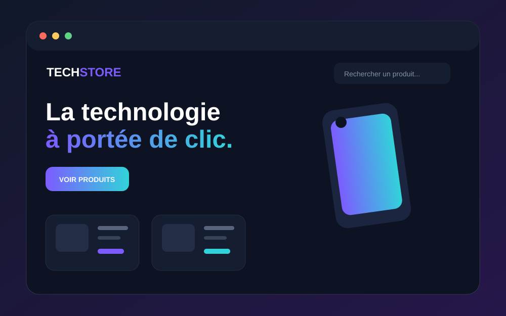

Une fonctionnalité directement utile au client et à ses visiteurs.
Boutique e-commerce
TechStore
Une boutique en ligne complète pour présenter des produits, gérer le panier et suivre les commandes.

Le projet
TypeE-commerce
StackDjango • JavaScript • SQLite
Durée cible14 à 21 jours
RôleDesign & développement
Objectif
Une boutique en ligne complète pour présenter des produits, gérer le panier et suivre les commandes.
La solution a été pensée pour être claire, rapide et utilisable sur ordinateur comme sur téléphone. L’interface met en avant l’action principale tout en gardant une navigation simple.
Fonctionnalités principales
Une expérience fluide, structurée et adaptée aux appareils mobiles.
Une gestion simple pour gagner du temps au quotidien.
Vous souhaitez un projet similaire ?
Expliquez votre besoin et recevez une proposition adaptée.
Parler du projet